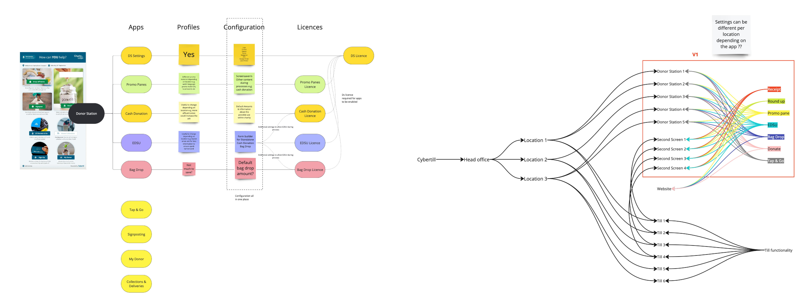
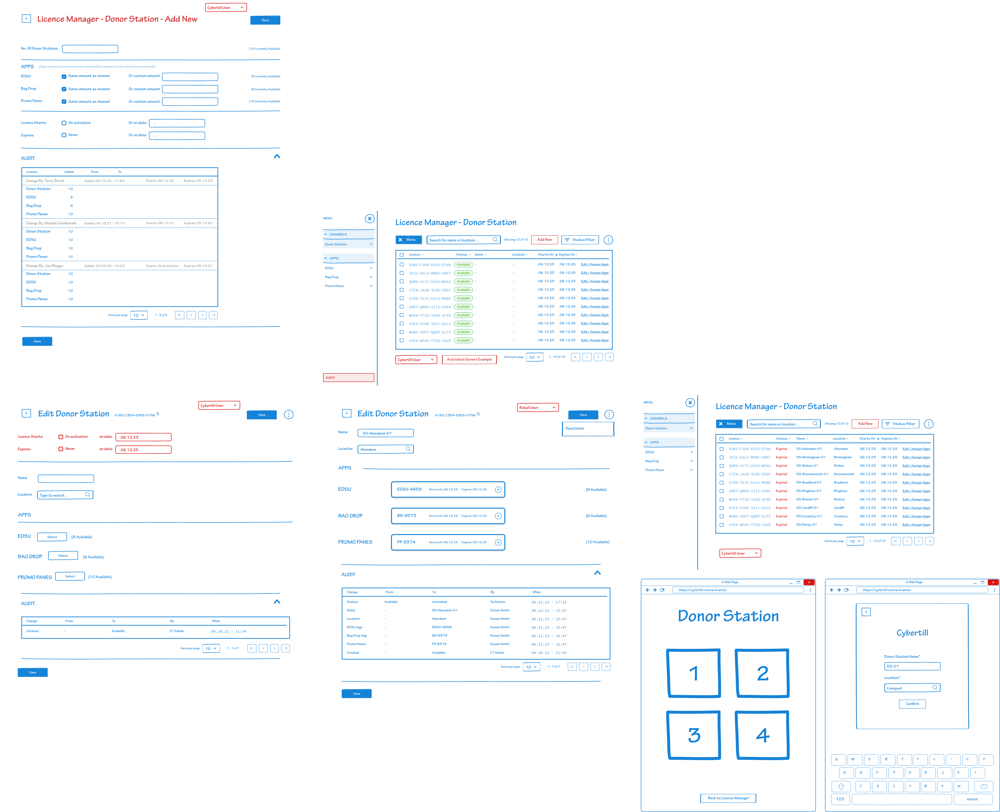
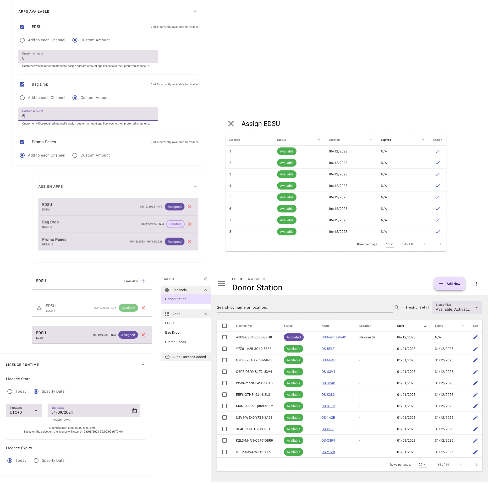
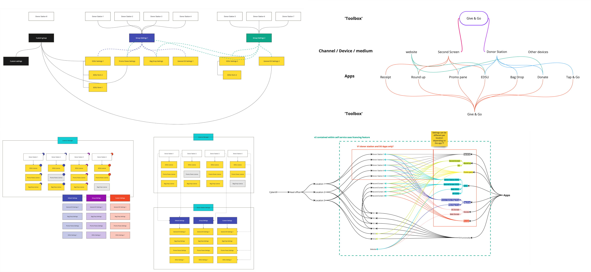
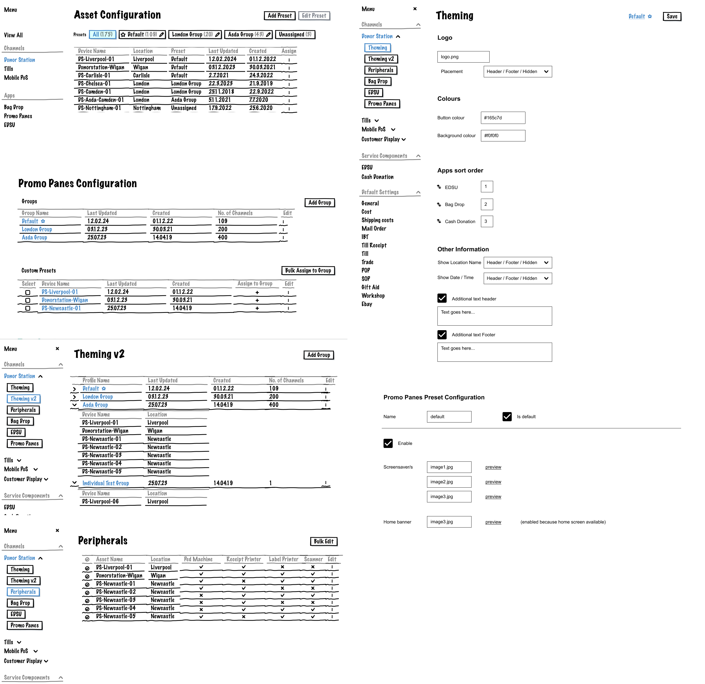
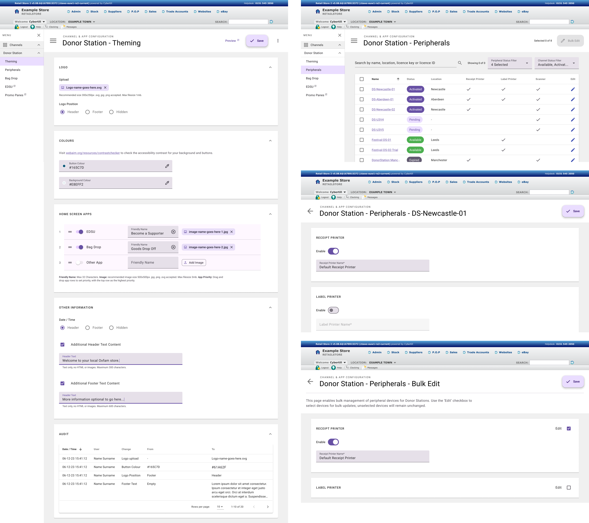
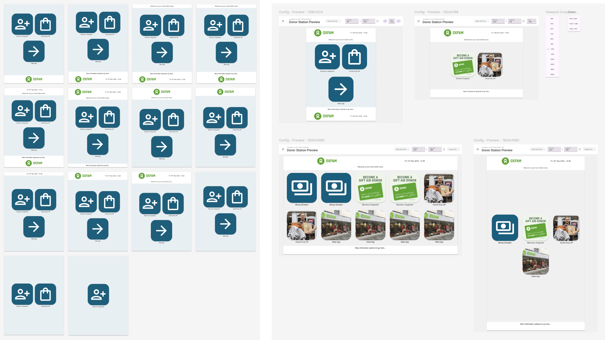

Building Cybertill's Licence Manager & Configuration Tools
Understanding the Brief
We were tasked with designing a Licence Manager to help retailers manage their ongoing licences with Cybertill, with a long-term vision of enabling self-service functionality. The tool needed to cater for small retailers managing a handful of licences, as well as larger organisations with thousands. Additionally, it had to integrate seamlessly with the existing system's location setup to maintain consistency across platforms.
Mapping the Workflow
Collaborating internally with software architects and product owners, we used Miro to outline user flows and identify key features for the Licence Manager. These included easy navigation, clear visibility of all products and licences, and indicators showing usage status (e.g., free vs. in-use). These flows became the foundation for wireframes that detailed how users would navigate and interact with the tool.
Designing for Scalability
The wireframes were designed to scale effectively for different retailer sizes, ensuring the interface was intuitive whether managing 10 licences or 10,000. Navigation was prioritised to handle both quick overviews and detailed licence management. Feedback from internal stakeholders and customer discussions helped refine the design, which was then converted into a Material Design framework for developer demos and story writing.
Settings & Configuration Area
In parallel, we worked on a new settings and configuration area to support products like the Donor Station. This area allowed retailers to adjust and customise system settings, linking directly to hardware components. The process involved extended collaboration with architects, product owners, and hardware teams due to its complexity and dependencies.
Wireframing & Prototyping
Given the intricacy of the settings area, the wireframing stage was extensive, ensuring every feature and dependency was considered. We prioritised an MVP (Minimum Viable Product) approach to meet project deadlines, breaking the design into stages for future expansion. To enhance usability, we prototyped preview areas where users could see how their settings changes would affect the final product, particularly for customer-facing tools like Donor Station.
Iterative Development & Collaboration
Both projects were developed iteratively, with regular demos to internal teams and customers for feedback. This ensured alignment with business needs and user expectations while maintaining technical feasibility. Material Design principles were applied throughout, creating a modern, consistent interface that developers could easily build upon.
Delivering Results
The final designs provided scalable, user-friendly tools that simplified licence management and configuration for retailers of all sizes. The preview functionality added a layer of confidence for users making changes, reducing errors and improving satisfaction. Both the Licence Manager and the settings area laid the groundwork for ongoing innovation and expansion.
